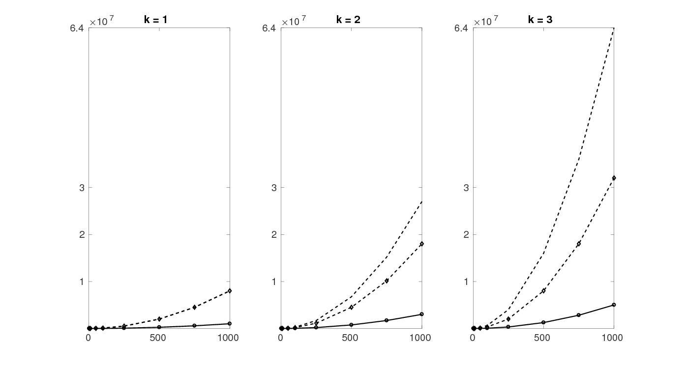

Space-Time Hybridizable Discontinuous Galerkin on moving domains
Discontinuous Galerkin schemes define the fluxes over element boundaries by using the unknowns from the two adjacent elements. Hybridizable/Embedded methods introduce additional unknowns on the element boundaries, the so-called facet unknowns, and the fluxes are defined using the unknowns from the current element and from the boundary. For Hybridizable DG these additional unknowns represent discontinuous function on the boundaries, while for Embedded DG they represent continuous functions on the boundaries. The introductions of these additional unknowns will result in a large linear system; however, it can be reduced to the facet unknowns by using the Schur complement. This requires the inversion of the matrix involving the unknowns on the element interiors, but due to the choice of the fluxes this matrix is block diagonal, therefore easily invertible.Using the MFEM Library (mfem.org) I implemented these methods using the Local DG flux for the diffusion. In this case some additional postprocessing can be done, which results in superconvergence for the diffusion dominated case. The following plot shows the number of degrees of freedom for and n-by-n structured triangular mesh in 2D. Dashed line: DG, continuous line CG, diamonds: HDG, circles EDG. 
Space-time HDG/EDG
For a time-dependent problem, when the domain also changes with time, the space-time approach provides a discretization that is arbitrarily high order both in space and in time. The concept is to rewrite the d-dimensional time dependent problem to a d+1-dimensional problem, where diffusion acts only in d-dimension. In other words starting from the time dependent problem on a time dependent domain with initial and boundary conditions \begin{equation*} \begin{alignedat}{3} \partial_t u -\nabla \cdot \nu\nabla u + \nabla \cdot (\mathbf{b} u) &= f \qquad & \mbox{in}\,\,\Omega(t), \\ u(0,x) &= u_0(x) \qquad & \mbox{in}\,\,\Omega(t_0),\\ u(t,x) &= g(t,x) \qquad & \mbox{on}\,\,\Gamma(t), \end{alignedat} \end{equation*} we set up the d+1-dimensional problem \begin{equation*} \begin{alignedat}{3} -\overline{\nabla} \cdot \nu\overline{\nabla} u + \nabla \cdot ((1,\mathbf{b})u) &= f \qquad & \mbox{in}\,\,\Omega(t), \\ u(0,x) &= u_0(x) \qquad & \mbox{in}\,\,\Omega(t_0),\\ u(t,x) &= g(t,x) \qquad & \mbox{on}\,\,\Gamma(t), \end{alignedat} \end{equation*} where \(\overline{\nabla} = (\partial_x, \partial_y, \partial_z)\) is the spatial gradient \(\nabla = (\partial_t, \overline{\nabla})\) is the space-time gradient.The time is split into intervals \(t_{initial} = t_0 < t_1 < \cdots < t_N = t_{final}\), and the problem is solved from interval to interval on the evolving domain. The solution in the different time intervals can be separated by using upwind flux for the advection. At every interval the only information that is needed from the previous one is the solution on the top of the previous time interval since this will be used as an initial condition.
On the following picture, the time dependent solution of the following problem can be seen with the movement of the domain for \(t\in [0,3]\) \begin{alignedat}{3} \partial_t u -0.01\Delta u + \nabla \cdot ((-4y,4x)^T u)&= 0 \qquad && \mbox{in}\,\,\Omega(t), \\ \end{alignedat} where the initial and boundary conditions are set in order to achive the above solution.